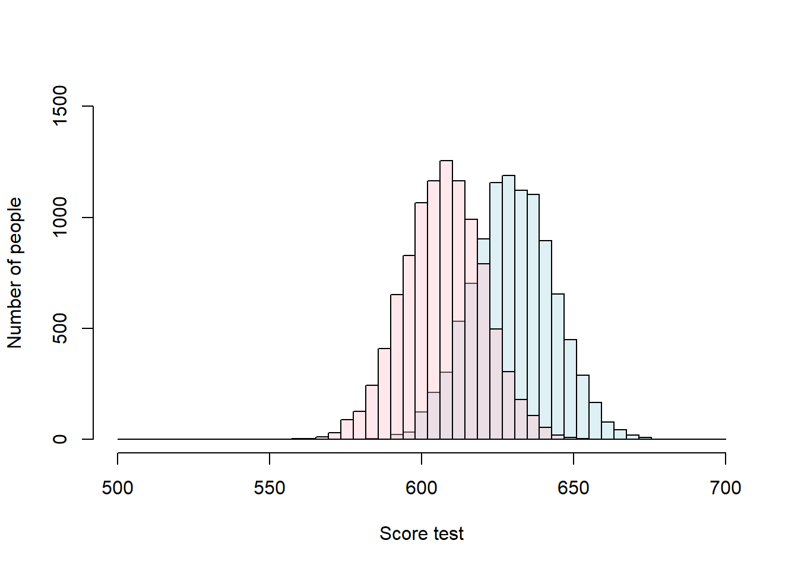
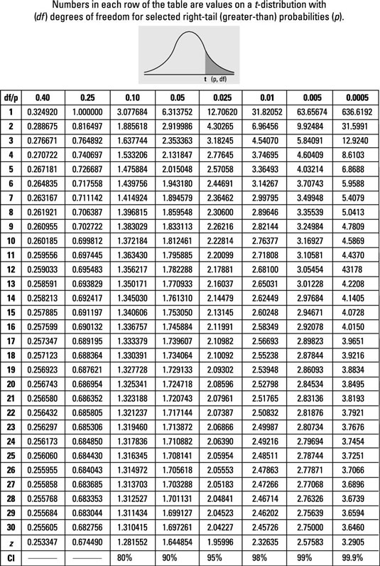

The two-sample T-test by hand
We perform a Two-Sample t-test when we want to compare the mean of two samples, and our sample sizes are smaller than 30.

Figure 11.5: T-test fucntion for two samples
Lets try an example.
Historically, males have scored 15 points more than girls in a given exam. No standard deviations exists. To test if this is true today, a researcher performed such a test in 10 males and 10 females and found that males scored 630.1 on average (+/- 13.42SD) and females 606.8 (+/- 13.14 SD). He wants to test the significance of this conclusion with a \(\alpha\) value (significance level) of 0.05.
Let’s start by stating the hypotheses:
H0: Men scores -(minus) Female scores <= 15, The null hypothesis is the complement of the alternative hypothesis, so set that one first
H1: Men scores-Female scores > 15 The question of interest is that males get 15 points more than females. So the difference between male and female scores is larger than 15 points.
What test to use?. Well the sample size is smaller than 30, so we need to use a T-Test.
And before we do any calculations, lets start by visualizing these data:
Males_Mean=630.1
Males_SDSD=13.42
Females_Mean=606.8
Females_SD=13.14
SimulatedMales<- rnorm(10000,Males_Mean,Males_SDSD)
SimulatedFemales<- rnorm(10000,Females_Mean,Females_SD)
breaks = seq(500,700, length.out = 50) #bins for the distribution
#histogram for drug
Males= hist(SimulatedMales,breaks = breaks, plot = FALSE)
#histogram for Placebo
Females= hist(SimulatedFemales, breaks = breaks, plot = FALSE)
#because you are plotting two distributions, it will be nice to use different colors. and because they likely overlap, you should use semitransparent colors
LightBlue <- rgb(173,216,230,max = 255, alpha = 100) #the function rgb lets your select one color, and the alpha gives you how tranparent
DarkRed <- rgb(255,192,203, max = 255, alpha = 95)
#lets plot the first distribution
plot(Males, main=NA,xlim=c(500,700),ylim=c(0, 1500),breaks = breaks, xlab = "Score test",ylab = "Number of people" ,col=LightBlue)
#now add the second distribution to the first plot, using the parameter add=TRUE, or add=T, they are both the same
plot(Females, add=T ,col=DarkRed)
Lets calculate the T-score for comparing two samples:
Males_Mean=630.1
Males_SDSD=13.42
Females_Mean=606.8
Females_SD=13.14
SampleSize= 10 #we can use this variable for both males and females, since in both cases 10 people were analyzed
T_Score_Numerator= (Males_Mean-Females_Mean) -15 #because we assume that males score 15 point more, we need to assume that the difference between the population means is 15 points
T_Score_denominator= sqrt(((Males_SDSD^2)/SampleSize)+((Females_SD^2)/SampleSize))
T_score=T_Score_Numerator/T_Score_denominator
T_score## [1] 1.397465Next, look for the t-critical value in the t-table for 18 degrees of freedom. In the case of a two sample t-test, degrees of freedoms are equal to the sample size one plus sample size two minus two) and a level of significance \(\alpha\) of 0.05 (Here we are looking at one tail test, as the alternative hypothesis states that one mean is larger than the other).

Figure 11.6: R-results for a one-sample z-test
So the critical t-Score is 1.734.
Since our calculated t-value (i.e., 1.397465) was smaller than the critical t-value (1.734), we fail to reject the null hypothesis. Males doe not get 15 points higher than females in this exam as it has been historically.